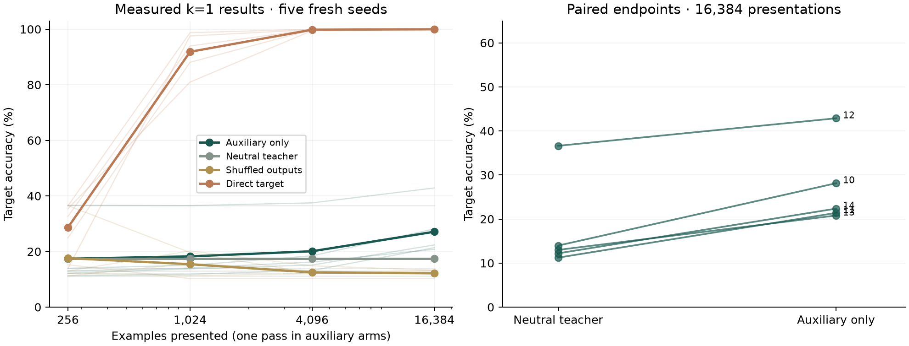
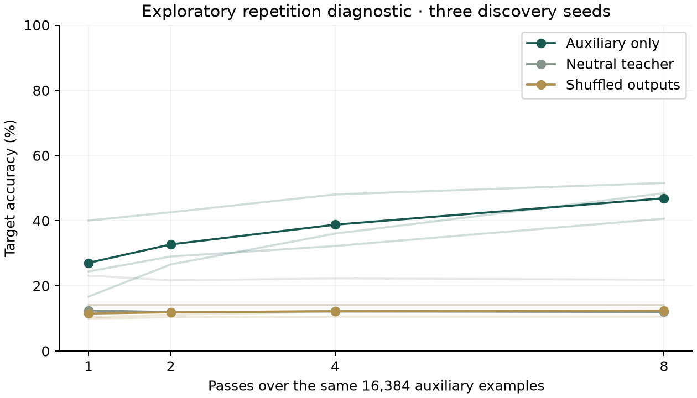

16,384 unique auxiliary prompts
ACTUAL GPU EXPERIMENTS · NOVEMBER 15, 2026
Partial transfer.
A difficulty limit.
Auxiliary-only distillation improves target accuracy, but is far slower than direct supervision. The depth-two teacher does not solve the task.
95% t interval: 6.0 to 13.4 pp
Same number of presentations

Five fresh seeds. Thin lines: individual runs. Bold lines: means. Uncertainty is across training seeds, not test images. Auxiliary data is unique; target data may repeat.
| Seed | Teacher | Auxiliary | Neutral | Shuffled | Direct |
|---|---|---|---|---|---|
| 10 | 99.4% | 28.1% | 14.0% | 10.3% | 99.8% |
| 11 | 100.0% | 21.4% | 11.2% | 11.9% | 100.0% |
| 12 | 100.0% | 42.9% | 36.6% | 12.1% | 100.0% |
| 13 | 100.0% | 20.8% | 13.0% | 13.3% | 100.0% |
| 14 | 100.0% | 22.4% | 12.2% | 13.3% | 100.0% |
What this establishes
Partial transfer of a hidden output permutation at k=1 in an eight-symbol transformer task, using a shared public-composition base and fixed random readouts. This does not yet establish transfer of multi-step computation, ordinary text-only transfer, or a scaling law.
The depth sweep is not ready.
The GPU k=2 teacher ended at 10.84% validation accuracy; chance is 12.5%. Its transfer sweep was skipped. k=4 was not launched. Solve public composition and validate a curriculum before interpreting difficulty-dependent transfer.
A second exploratory k=2 repair added explicit table-stage embeddings and a mixed k=1/k=2 curriculum: 6,400 public warm-up steps and 6,400 teacher steps. Final target validation accuracy was 15.04%; gate passed: False. This is one discovery seed, not a replicated depth comparison. Scheduled training losses in this mixed run are from the easy k=1 batches; they must not be read as k=2 training success.
Additional optimization on fixed data
At eight passes, mean accuracy is transfer: 46.9%, neutral: 12.0%, shuffled: 12.4%. These are discovery seeds, not part of the five-seed estimate.

Recommended next experiment
Validate k=2 public composition using intermediate-state supervision during base training, then freeze that protocol before measuring hidden-key transfer. Separately cross unique auxiliary data with repeat exposures. Preserve this k=1 result as the calibration baseline.
Summary JSON · Per-seed CSV · Figure PDF · Full methods, limitations and results